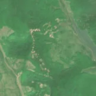
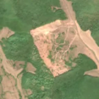

23,0 ha de pădure schimbată lângă Almașu
Între 27 mai 2026 și 16 iulie 2026, pe aproximativ 23,0 ha de pădure din comuna Almașu, județul Sălaj, imaginile Sentinel-2 arată că vegetația a dispărut sau s-a schimbat puternic. În registrul public există o autorizație de tăiere pentru acest loc.
Autorizația de tăiere
cu autorizație
Parcela autorizată acoperă zona, iar autorizația era valabilă când s-a tăiat.


Înainte și după: Copernicus Sentinel-2, 10 m pe pixel, conturul zonei cu portocaliu. Poza detaliată (Esri World Imagery) e de acum 1–4 ani: arată ce era acolo înainte, nu tăierea.
Pe scurt
- Identificator
- 20260716_46970_23137
- Locul
- comuna Almașu, județul Sălaj (SIRUTA 139982)
- Coordonate (centru)
- 46.97026, 23.13717 · Google Maps · OpenStreetMap
- Suprafața
- 23,0 ha (din pixeli de 10 m; ± câțiva pixeli pe margine)
- Ultima imagine cu pădurea întreagă
- 27 mai 2026
- Prima imagine cu schimbarea
- 16 iulie 2026
- Imagini în care se vede schimbarea
- 17
- Cât de sigur e semnalul din satelit
- medie
- Autorizația cea mai apropiată
- APV 2600259801360 · Ocolul Silvic Stejarul Zalău, valabilă 10 iunie 2026 – 9 noiembrie 2026, la 0 m de zonă
- Terenul
- în afara amenajamentelor silvice publicate (pășune, mal de apă sau pădure privată fără amenajament în registru)
- Chiar lângă
- o altă schimbare, văzută pe 27 aprilie 2026: pagina ei
- Garda Forestieră
- Oradea
Dacă vrei să verifici sau să sesizezi
- Pădurile din județul Sălaj sunt în grija Gărzii Forestiere Oradea, care controlează tăierile și dă amenzile.
- Autorizația găsită în zonă e emisă de Ocolul Silvic Stejarul Zalău.
- Formularul Gărzii Forestiere Naționale primește sesizări și fără nume. Trimite linkul acestei pagini, coordonatele și pozele. Dacă tăierea e în desfășurare, sună la 112.
- Autorizațiile și transporturile de lemn se pot căuta în Inspectorul Pădurii.
Pagina arată ce se vede din satelit și ce scrie în registrul public; nu e o dovadă în sine.
Cum citezi zona
Linkul acestei pagini nu se schimbă. Dacă zona iese vreodată de pe hartă, pagina rămâne, cu data și cu ce știam despre ea.
Pădurea RO, zona 20260716_46970_23137: 23,0 ha, comuna Almașu, județul Sălaj; schimbare văzută din satelit între 27 mai 2026 și 16 iulie 2026. https://iliemihai.github.io/padurea-ro/zona/20260716_46970_23137/ (consultat la [data]). Date: CC BY 4.0.
Datele zonei: GeoJSON · toate zonele: date deschise · licența CC BY 4.0.
Istoricul zonei pe hartă
Starea se poate schimba când registrul publică o autorizație sau când analistul vede poze mai bune. O ținem aici, ca un link citat să arate și ce spuneam atunci.
Pe hartă cel târziu din 5 noiembrie 2026.
- 5 noiembrie 2026 – azi · cu autorizație
Detalii tehnice, pentru verificare
De ce acest nivel de încredere:
- văzută schimbată în 17 imagini diferite
- peste 3 ha
- ultima imagine cu zona intactă e cu 50 de zile înainte, deci nu știm bine când s-a schimbat
- AI-ul vede pădure dispărută
- în poze, zona se schimbă vizibil față de pădurea din jur
- Placa Sentinel-2
- 34TFT
- NDVI de referință
- 0.88
- NBR de referință
- 0.63
- Scăderea în pădurea din jur
- 0.05
- Persistență
- 0.97
- NDVI / NBR după
- 0.503 / 0.17
- Analistul de zi (model)
- taiere · 0.9 · claude-haiku-5-5
Cum se calculează fiecare: metodologia.
Pune harta zonei într-un articol
Copiază codul în articol (merge în majoritatea site-urilor de știri). Sau pune doar linkul: WhatsApp, Facebook și X arată singure poza zonei.